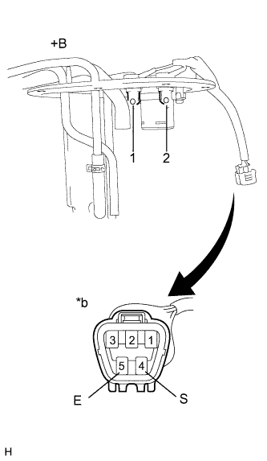
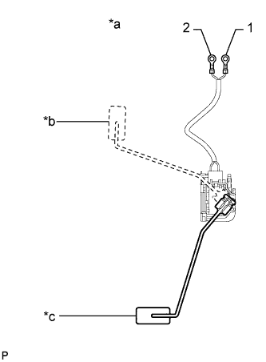

DTC B1501 Обнаружен обрыв цепи вспомогательного датчика уровня топлива |
| Код DTC | Условие обнаружения DTC | Неисправный участок |
| B1501 | Щиток приборов обнаруживает неисправность датчика уровня топлива. |
|
| 1.СНИМИТЕ ПОКАЗАНИЯ ПОРТАТИВНОГО ДИАГНОСТИЧЕСКОГО ПРИБОРА (УКАЗАТЕЛЬ УРОВНЯ ТОПЛИВА) |
Действуя в соответствии с указаниями на дисплее портативного диагностического прибора, выберите режим Data List (Нажмите здесь).
| Информация на дисплее прибора | Измеряемая величина / диапазон измерения | Нормальное состояние | Замечание по диагностике |
| Fuel Input | Входной сигнал датчика уровня топлива в сборе (главного) / мин.: 0, макс.: 127,5 | Уровень входного сигнала датчика топлива | Единицы: L |
|
| ||||
| OK | |
| 2.ПРОВЕРЬТЕ ЖГУТ ПРОВОДОВ И РАЗЪЕМ (ЩИТОК ПРИБОРОВ – ПРОДУВОЧНЫЙ ПАТРУБОК ТОПЛИВНОГО БАКА В СБОРЕ) |
Отсоедините разъем G6 щитка приборов.
Отсоедините разъем t1 датчика.
Измерьте сопротивление в соответствии со значениями, приведенными в таблице ниже.
| Контакты для подключения диагностического прибора | Условие | Заданные условия |
| G6-8 (L) - t1-4 (S) | Всегда | Менее 1 Ом |
| G6-23 (FE) - t1-5 (E) | ||
| G6-21 (E2) - масса | ||
| G6-8 (L) или t1-4 (S) - масса | Всегда | 10 кОм или более |
|
| ||||
| OK | |
| 3.ПРОВЕРЬТЕ ПРОДУВОЧНЫЙ ПАТРУБОК ТОПЛИВНОГО БАКА В СБОРЕ |
|  |
Снимите продувочный патрубок топливного бака в сборе.
Для моделей с двигателем 1GR-FE: (Нажмите здесь)
Для моделей с 2TR-FE: (Нажмите здесь)
Для моделей с 1KD-FTV: (Нажмите здесь)
Для моделей с 5L-E: (Нажмите здесь)
Измерьте сопротивление в соответствии со значениями, приведенными в таблице ниже.
| Контакты для подключения диагностического прибора | Условие | Заданные условия |
| 4 (S) - 1 | Всегда | Менее 1 Ом |
| 5 (E) - 2 | Всегда | Менее 1 Ом |
| *a | Продувочный патрубок топливного бака в сборе |
| *b | Устройство с неподсоединенным жгутом проводов (к продувочному патрубку топливного бака в сборе) |
| Результат | Следующий шаг |
| OK | А |
| NG (для моделей с 1GR-FE) | B |
| NG (для моделей с 2TR-FE) | C |
| NG (для моделей с 1KD-FTV) | D |
| NG (для моделей с 5L-E) | E |
|
| ||||
|
| ||||
|
| ||||
|
| ||||
| А | |
| 4.ПРОВЕРЬТЕ ДАТЧИК УРОВНЯ ТОПЛИВА В СБОРЕ |
|  |
Снимите датчик уровня топлива в сборе.
Для моделей с двигателем 1GR-FE: (Нажмите здесь)
Для моделей с 2TR-FE: (Нажмите здесь)
Для моделей с 1KD-FTV: (Нажмите здесь)
Для моделей с 5L-E: (Нажмите здесь)
Измерьте сопротивление в соответствии со значениями, приведенными в таблице ниже.
| Контакты для подключения диагностического прибора | Условие | Заданные условия |
| 1 - 2 | Поплавок на отметке F (верхняя) | 12-18 Ом |
| Поплавок на отметке E (нижняя) | 405 - 415 Ом |
| *a | Датчик уровня топлива в сборе |
| *b | Поплавок на уровне F (сверху) |
| *c | Поплавок на уровне E (снизу) |
| Результат | Следующий шаг |
| OK | A |
| NG (для моделей с 1GR-FE) | B |
| NG (для моделей с 2TR-FE) | C |
| NG (для моделей с 1KD-FTV) | D |
| NG (для моделей с 5L-E) | E |
|
| ||||
|
| ||||
|
| ||||
|
| ||||
| A | ||
| ||